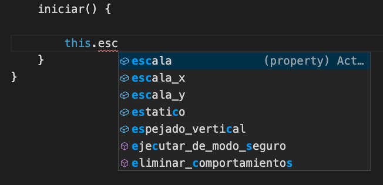
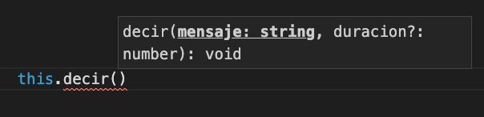
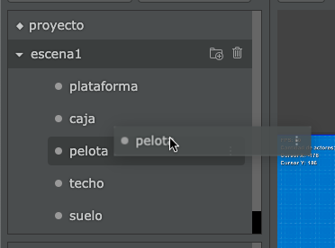

El editor de código tiene varias funcionalidades para ayudarte a escribir código de manera rápida y cómoda.
En esta sección te vamos a resumir algunas de esas funcionalidades:
Siempre que escribas código, el editor intentará anticiparse a lo que escribas para mostrar sugerencias:

Además, si estás escribiendo la llamada a un método el editor te mostrará los argumentos que podrías incluir:

En este caso, el método decir admite dos argumentos: un mensaje y una duración. Notá que la duración tiene un símbolo de pregunta, lo que indica que ese argumento es opcional.
Para obtener referencias rápidas a los actores puedes simplemente “arrastrar y soltar” los actores sobre el código del editor:

Cuando el editor detecte que arrojaste un actor sobre el editor va a escribir una linea de código como esta:
Lo que es bastante útil, porque nos evita escribir ese código.
Y si el actor que arrastramos sobre el editor es un actor desactivado, el editor va a colocar este código en su lugar:
Además del autocompletado el editor nos permite escribir fragmentos rápidos, por ejemplo si escribis “observar” y pulsas enter, el editor va a autocompletar este texto:
Además va a situar el cursor en la posición para que podamos personalizar esta linea de código rápidamente.
Otros de los fragmentos rápidos que incluye el editor son los siguientes:
pilasclonarclonar_encontrolanimarTe recomendamos probar escribir alguno de estos atajos para familiarizarte, sobre todo el fragmento control que es bastante completo.
Cuando tenemos un actor con muchos métodos es aconsejable hacer búsquedas en lugar de recorrer el código hacia arriba y abajo con la barra de scroll.
Para buscar métodos por nombres se puede pulsar el botón derecho del mouse sobre el editor y seleccionar la siguiente opción:
Luego vas a notar que aparecerá una barra de búsqueda con todos los métodos del actor, simplemente escribí o selecciona el método al que quieras ingresar.

Ten en cuenta que también puedes activar esta funcionalidad pulsando ctrl+P como atajo.